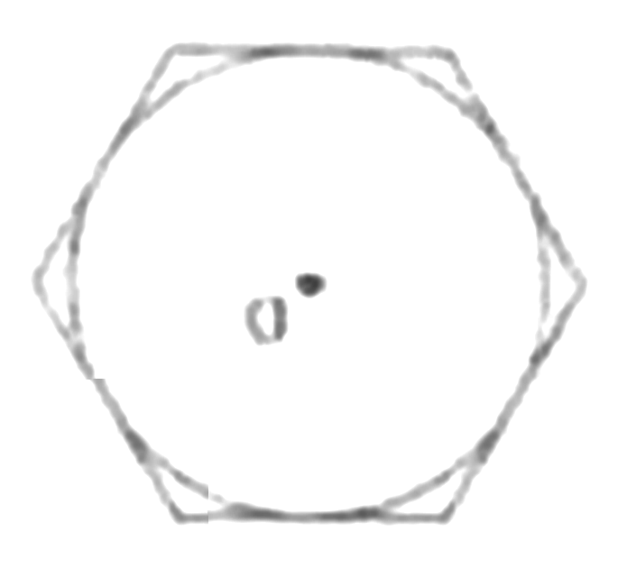
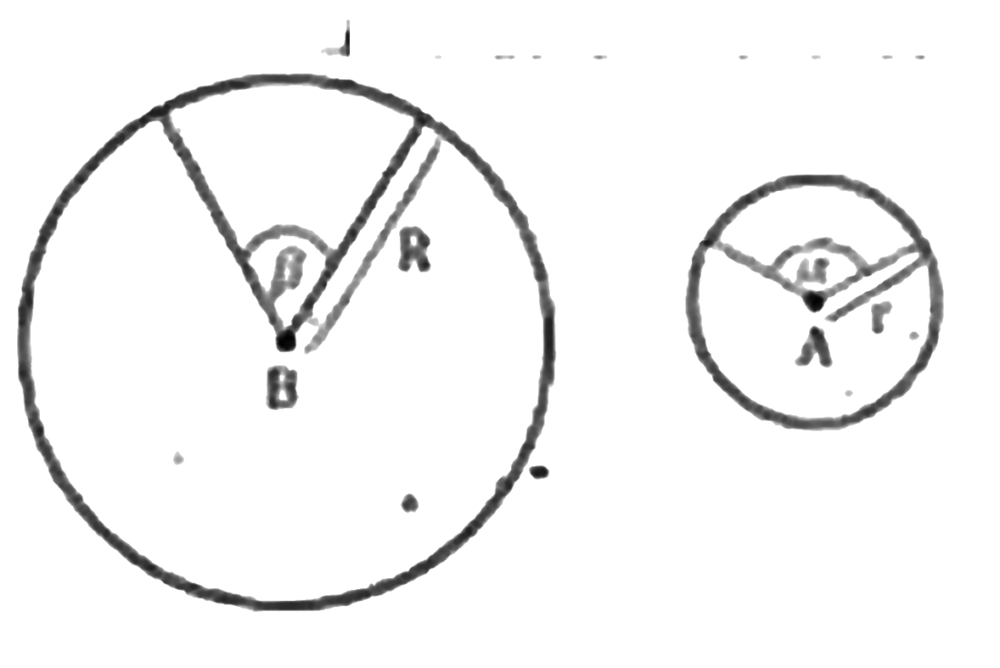

1.
לכל מספר x שהוא חיובי ושלם הוגדרה הפעולה $ כך:
אם x = 2 אז $(x) = 4
אם x > 2 אז $(x) = $(∛x) + 1
$(512) = ?
2.

בסרטוט שלפניכם משושה משוכלל החוסם מעגל. רדיוס המעגל שווה ל־r ס"מ.
מה היקף המשושה (בס"מ)?
3.
נתון: −1 < x < 1
מה מהבאים נכון בהכרח?
⚠ עמודים 92–93 לא צולמו: חסרות שאלות 4–9 של מקבץ 22.
10.
בסרטוט שלפניכם שני מעגלים שונים – האחד שמרכזו A והשני שמרכזו B. נתון: α = 3β , R = 2r.
על פי נתונים אלו והנתונים שבסרטוט, מה מהבאים נכון בהכרח?
